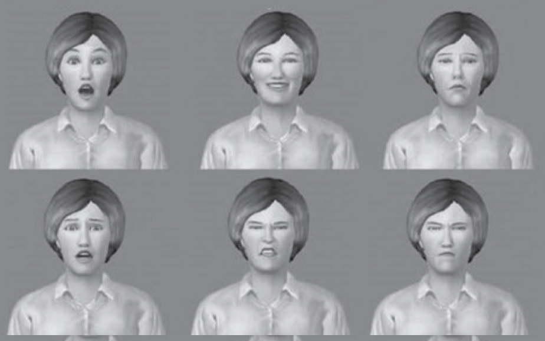
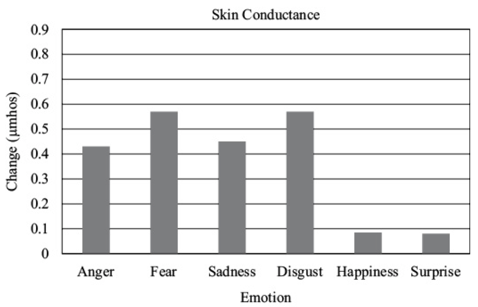

EIM03
Ewolucyjne teorie emocji
Krzysztof Basiński
Teorie współczesne
Teorie współczesne
- Teorie ewolucyjne
- Teorie oceny (appraisal)
- Psychologiczny konstrukcjonizm
Teoria ewolucji - powtórka
Ewolucja - podstawowe mechanizmy
- Selekcja naturalna
- Selekcja seksualna
Selekcja naturalna
- Cechy organizmu, które zwiększają jego szanse na sukces reprodukcyjny (RS), są zachowane w trakcie ewolucji
- Cechy, które nie zwiększają szans na RS, nie są zachowane
Selekcja naturalna
- Cechy zwiększające szanse na reprodukcję są najczęściej dobrze dopasowane do środowiska (fitness)
- Teoria ewolucji zakłada, że środowisko wywiera zasadniczy wpływ na kształtowanie organizmów
Samolubne geny (Dawkins)
- To co podlega selekcji i replikacji, to tak na prawdę geny, a nie organizmy
- Geny, które będą się skutecznie replikować muszą:
- replikować się wielokrotnie w ciągu życia (fecundity)
- prowadzić do długiego życia, które zwiększa możliwości replikacji (longevity)
- mieć wysoką jakość - replikować się dokładnie, aby geny następnych pokoleń miały niewiele błędów (fidelity)
Samolubne geny (Dawkins)
Uwaga! Teza o samolubnych genach jest dość kontrowersyjna - być może lepiej analizować nie pojedyncze geny a całe fenotypy - http://pl.wikipedia.org/wiki/Samolubny_gen
Jak to się ma do gatunków?
- Ewolucja nie dotyczy gatunków!
- Adaptacje nie wykształciły się po to, aby umożliwić przetrwanie gatunku!
- Podział na gatunki jest konsekwencją ewolucji (a tak na prawdę człowieka, który nadał organizmom etykiety!)
Adaptacja i fitness
- Adaptacje to te cechy organizmu, które ułatwiają mu przetrwanie i reprodukcję w danym środowisku
- Adaptacje zwiększają szanse na RS
- Dostosowanie (fitness) dotyczy dopasowania do środowiska
- Cechy adaptacyjne zwiększają dostosowanie
Selekcja seksualna
- Dlaczego pawie mają ogony?
- Czy pawi ogon zwiększa szanse na przetrwanie?
- Czy pawi ogon zwiększa szanse na reprodukcję?
- (dlaczego tak jest? jeśli paw może robić wszystko to co inne pawie oraz ma piękny ogon, pewnie ma też inne silne geny)
Dwa warianty selekcji seksualnej
- Selekcja interseksualna - cechy są atrakcyjne dla płci przeciwnej (pawi ogon, szerokie ramiona, kobiece kształty)
- Selekcja intraseksualna - cechy zwiększające przewagę w walce o płeć przeciwną (rogi u jeleni i łosi, wojny u ludzi)
Mechanizmy ewolucji
- Selekcja naturalna
- Selekcja seksualna
- Dryf genetyczny - wydarzenia “losowe” w historii genotypów
- Spandrels - efekty uboczne, pojawiające się w trakcie ewolucji, które nie mają roli adaptacyjnej
- Np. umiejętność czytania nie jest adaptacją ewolucyjną, została wykształcona jako skutek uboczny wykształcenia się języka, muzyka jako “słuchowy sernik” (auditory cheesecake) (Pinker, 1999)
Symulacja dryfu genetycznego

Strategie ewolucyjne
- Dobór indywidualny (dobór naturalny, dobór seksualny)
- Dobór krewniaczy (kin selection, inclusive fitness)
- Altruizm odwzajemniony (reciprocal altruism)
Dobór krewniaczy
- Zwiększenie szans na RS krewnych, nawet kosztem własnego RS
- Prawdopodobieństwo zachowań altruistycznych rośnie jako funkcja % wspólnych genów
- U ludzi tłumaczy dużą liczbę zachowań zupełnie altruistycznych (nie opartych na regule wzajemności) w stosunku do najbliższej rodziny
Altruizm odwzajemniony
- Organizm A zachowuje się przez jakiś czas nieadaptacyjnie (zmniejsza swoje fitness), jednocześnie zwiększając fitness organizmu B
- A robi to, ponieważ “spodziewa się”, że B zrobi podobnie w przyszłości
- Jeśli B nie odwzajemnia przysługi, A również przestaje
- Robert Trivers, lata 70te
Dylemat więźnia
Dwóch podejrzanych zostało zatrzymanych przez policję. Policja, rozdziela więźniów i przedstawia każdemu z nich tę samą ofertę: jeśli będzie zeznawać przeciwko drugiemu, a drugi będzie milczeć, to zeznający wyjdzie na wolność, a milczący dostanie dziesięcioletni wyrok. Jeśli obaj będą milczeć, obaj odsiedzą 6 miesięcy za inne przewinienia. Jeśli obaj będą zeznawać, obaj dostaną pięcioletnie wyroki.
Dylemat więźnia
Każdy z nich musi podjąć decyzję niezależnie i żaden nie dowie się, czy drugi milczy czy zeznaje, aż do momentu wydania wyroku. Co robią?
Wet za wet (tit for tat)
Wet za wet to następująca strategia gry w iterowany (powtarzany) dylemat więźnia:
- na początku współpracuj
- potem rób dokładnie to, co przeciwnik zrobił w poprzedniej turze
Altruizm odwzajemniony
- Bakterie to robią!
- Naczelne to robią
- U ludzi - reguła wzajemności
Środowisko adaptacji ewolucyjnej
- Ang. environment of evolutionary adaptedness (EEA)
- Takie środowisko, dla którego wykształciły się adaptacje na drodze ewolucji
- Jeżeli środowisko szybko się zmienia, ewolucja nie nadąża
Jakie jest EEA ludzi?
- Zbieracko-łowieckie bandy, złożone z ok. 150 osobników, w których ludzie byli dość mocno spokrewnieni ze sobą
- “Our modern skulls house a Stone Age mind” - Cosmides & Tooby, 1997
Założenia psychologii ewolucyjnej
- Organizmy są produktami selekcji naturalnej i innych procesów ewolucyjnych
- Specyficzne cechy organizmów są więc również produktami ewolucji
- Ludzki układ nerwowy jest ważną fizyczną cechą naszego gatunku (mózg jest najbardziej skomplikowanym ludzkim organem)
Założenia psychologii ewolucyjnej
- Całość zachowania jest wynikiem pracy układu nerwowego
- Ludzkie zachowanie jest więc rezultatem ewolucji
Zachowanie z perspektywy ewolucji
- Zachowanie jest adaptacją, która u organizmów z układem nerwowym pozwala reagować na bodźce ze środowiska
- Np. trawa nie ma układu nerwowego, więc nie może uciec przed krową…
- “Evolutionary psychology is the radical notion that human behavior is part of the natural world”
Pojęcia
- Selekcja naturalna (natural selection)
- Selekcja seksualna (sexual selection)
- Sukces reprodukcyjny (RS - reproductive success)
- Dziedziczność (heritability)
- Mutacja (mutation)
- Adaptacja (adaptation)
- Fitness
Ewolucyjne teorie emocji
- Darwin zauważył rolę przystosowawczą ekspresji mimicznych
- Twierdził, że niektóre ekspresje mimiczne są zbliżone u różnych gatunków
- Emocje jako “przydatne nawyki” (servicable habits)
- Funkcja komunikacyjna
Servicable habits - przykłady
- Obrzydzenie powoduje utrudnione przyjmowanie trującego jedzenia i wdychanie trujących substancji
- Zdziwienie powoduje poszerzenie pola widzenia (uniesienie brwi)
- Wstyd przygotowuje ciało na potencjalne ataki
Ewolucyjne teorie emocji
- Emocje powstają w odpowiedzi na problemy adaptacyjne
- Emocje są wyzwalane przez bodźce sygnałowe
- Emocje skutkują tendencjami do działania (action tendencies)
- Tendencja, ponieważ organizm przygotowuje się do działania (ale niekoniecznie musi zadziałać)
Emocje i problemy adaptacyjne (Plutchik)
| Problem | Emocja | Tendencja do działania |
|---|---|---|
| Zagrożenie | Strach | Ucieczka |
| Przeszkoda | Gniew | Destrukcja:P |
| Potencjalny partner seksualny | Radość, miłość | Zaloty, zach. seksualne |
Emocje i problemy adaptacyjne (Plutchik)
| Problem | Emocja | Tendencja do działania |
|---|---|---|
| Trująca substancja | Obrzydzenie | Wymioty, odpychanie |
| Nagły, nowy obiekt | Zdziwienie | Orientacja |
Emocje podstawowe
- Skoro emocje wykształciły się ewolucyjnie, powinny być uniwersalne
- …przynajmniej niektóre
- Skąd wiemy, które?
Emocje podstawowe - warunki
- Uniwersalna kulturowo ekspresja
- Specyficzna fizjologia
- Obecność u innych naczelnych
- Wiążą się z dokonywaniem automatycznych ocen otoczenia


Emocje podstawowe
- Strach
- Obrzydzenie
- Gniew
- Zaskoczenie
- Radość
- Smutek
- Zadowolenie (?)
Emocje a pobudzenie fizjologiczne
- Czy faktycznie mamy specyficzne wzorce fizjologiczne?
- Levenson, Ekman i Friesen (1990) kazali ludziom poruszać konkretnymi mięśniami twarzy (Directed Facial Action task)
- Wywoływali w ten sposób ekspresje emocjonalne charakterystyczne dla emocji
- Powodowało to specyficzne wzorce pobudzenia
Emocje podstawowe

(Levenson, Ekman, Friesen, 1990)
Emocje podstawowe

(Levenson, Ekman, Friesen, 1990)
Programy afektywne (Tomkins)
- Wszystkie komponenty emocji dzieją się jednocześnie, ponieważ są składnikami programu afektywnego
- Programy afektywne to wrodzone, mózgowe wzorce reakcji emocjonalnych
- Programy sterują pobudzeniem fizjologicznym, ekspresją mimiczną, być może treściami poznawczymi
Problemy z teoriami ewolucyjnymi
- Nie wszystkie emocje mają bodźce sygnałowe
- Nie wszyscy reagują tak samo na te same bodźce sygnałowe
- Nie zawsze realizowane są wszystkie elementy programu afektywnego
- Brak konkluzywnych badań nad koherencją komponentów programów afektywnych